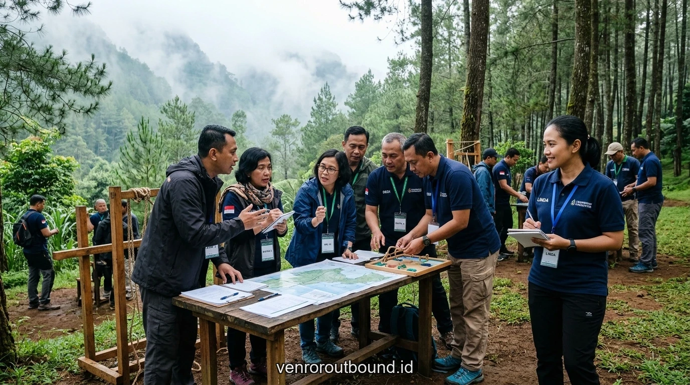
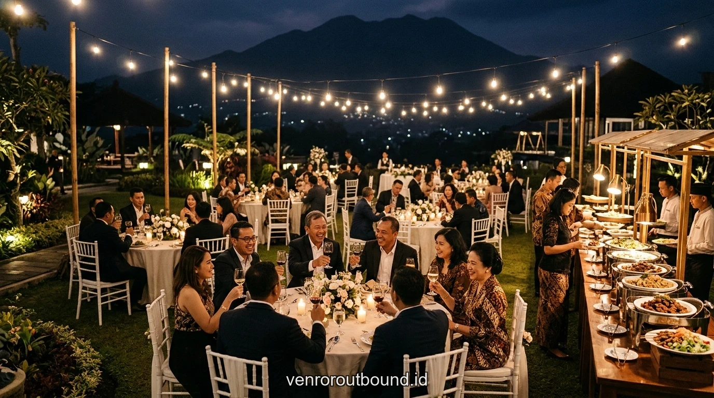
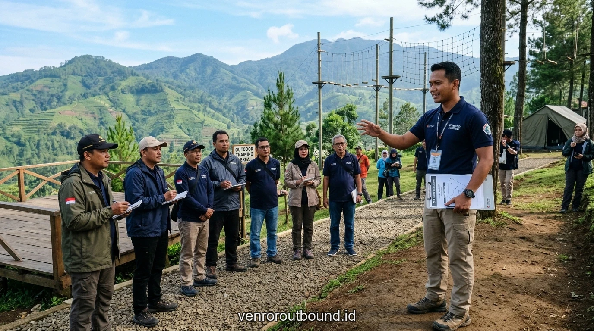
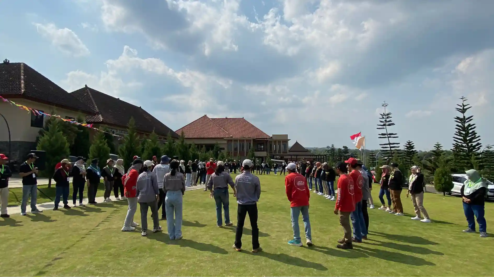

1. Urgensi dan Landasan Konseptual: Solusi All-Inclusive untuk Pimpinan Korporat
Jawaban singkat: Paket Outbound Executive Leadership di Batu Malang menyediakan layanan retret manajerial all-inclusive dengan fasilitas resort bintang 4-5, venue privat steril, master trainer bersertifikasi BNSP, katering sehat, sesi gala dinner intimate, dan laporan evaluasi kepemimpinan komprehensif.
Keterbatasan waktu para eksekutif menuntut vendor outbound untuk menyajikan solusi menyeluruh (*end-to-end service*). Tim HRD dan sekretariat direksi tidak boleh dibebani dengan kerumitan koordinasi vendor terpisah antara pihak hotel, transportasi, katering, dan fasilitator aktivitas.
Paket Executive Leadership 2026 di Batu Malang dirancang secara holistik untuk memberikan ketenangan pikiran (*peace of mind*) total bagi penyelenggara. Melalui integrasi modul dengan layanan retret kepemimpinan profesional, setiap aspek acara dirangkai dengan ritme yang seimbang antara stimulasi intelektual di lapangan dan relaksasi fisik di alam asri.
2. Analisis Kebutuhan Fasilitas: Rincian Fitur Paket Kelas Eksekutif
Berbeda dengan paket gathering massal, paket executive leadership mengedepankan kualitas premium dan privasi tinggi di setiap layanannya. Penyelenggara wajib memastikan detail fasilitas berikut tersedia:
- Venue Privat Eksklusif: Pemilihan lahan aktivitas di resort pegunungan tertutup yang terisolasi dari keramaian publik.
- Fasilitator Master Trainer BNSP: Didampingi langsung oleh konsultan senior pengembangan organisasi berjam terbang tinggi.
- Peralatan Simulasi High-Grade: Perlengkapan simulasi taktis terbuat dari material kayu halus, tali statis/dinamis UIAA, dan perangkat navigasi standar.
- Akomodasi & Fine Dining: Menginap di villa privat atau kamar suite dengan sajian prasmanan menu sehat dan barbecue malam hari.

Penting: Executive Leadership Kantor Tanpa Simulasi Outdoor Bisa Bikin Tumpul
Pahami urgensi metodologis mengapa simulasi alam terbuka penting untuk menjaga ketajaman manajerial.
3. Tabel Analisis Komparatif Karakteristik Pendekatan
Tabel perbandingan berikut menyajikan struktur pilihan durasi paket retret eksekutif yang dapat disesuaikan dengan agenda kerja manajemen:
4. Panduan Implementasi Lapangan & Manajemen Risiko
Keselamatan peserta merupakan prioritas non-negosiasi dalam setiap pelaksanaan kegiatan di luar ruang. Terlepas dari seberapa menariknya tema acara, mitigasi risiko wajib disiapkan sejak tahap survei venue hingga pembubaran rombongan. Aspek teknis yang harus dipastikan meliputi:

5. Alur Tahapan Eksekusi Kegiatan yang Terstruktur
Agar seluruh rangkaian agenda terlaksana tepat waktu tanpa menciptakan kepenatan fisik yang berlebih, jadwal kegiatan wajib dirancang dengan proporsi istirahat yang cukup. Berikut adalah urutan skenario operasional yang disarankan:
- Konsultasi Kebutuhan Awal: Diskusi mendalam via telepon atau pertemuan tatap muka mengenai profil peserta dan objektif strategis.
- Penyusunan Proposal Terperinci: Penyajian alternatif venue resort, rincian rundown menit demi menit, dan breakdown biaya transparan.
- Site Visit & Menu Tasting: Tim panitia perusahaan diundang meninjau venue dan mencicipi sajian menu makanan sebelum hari pelaksanaan.
- Eksekusi Profesional Terkelola: Tim operasional Vendor Outbound mengambil alih seluruh tanggung jawab lapangan hingga tuntas.

Analisis SOP & Kriteria Efektif Menentukan Program Executive Leadership Kantor Paling Pas
Pahami checklist evaluasi vendor, kualifikasi sertifikasi instruktur, dan rasio K3 lapangan.
Konsistensi penjadwalan dan fleksibilitas durasi antarpos memungkinkan setiap peserta tetap fokus menyerap esensi pelatihan tanpa terburu-buru oleh tekanan waktu.
6. Faktor Kunci Keberhasilan dan Parameter Evaluasi
Pengukuran hasil kegiatan sebaiknya mengombinasikan umpan balik langsung (evaluasi kepuasan peserta) dengan observasi perilaku pascakegiatan. Beberapa tolok ukur kualitatif yang dapat diamati antara lain:
- Dedicated Event Coordinator: Satu narahubung utama yang mendampingi panitia internal perusahaan dari awal hingga akhir.
- Dokumentasi Sinematik Premium: Tim fotografer dan videografer profesional dengan drone 4K yang mengabadikan setiap momen bersejarah.
- Fleksibilitas Cuaca Terpadu: Kesiapan ballroom indoor ber-AC sebagai alternatif instan jika cuaca alam tidak memungkinkan aktivitas luar ruang.
Kombinasi evaluasi kuantitatif dan kualitatif memberikan gambaran menyeluruh terhadap dampak program terhadap budaya kerja perusahaan dalam jangka panjang.

Paket Leadership Camp Perusahaan Berdampak Nyata
Pelajari paket pelatihan kepemimpinan outdoor teruji untuk manajer lini pertama dan calon pemimpin masa depan.
7. Kesimpulan dan Rekomendasi Tindak Lanjut
Mengingat ketersediaan villa resort privat di Batu Malang sangat terbatas terutama pada akhir pekan dan musim kuartal akhir, kami menyarankan konfirmasi tanggal acara dilakukan minimal satu hingga dua bulan sebelumnya. Berikan pengalaman retret kepemimpinan terbaik bagi pimpinan korporat Anda bersama Vendor Outbound ID.
Rencanakan Paket Executive Leadership Terbaik untuk Perusahaan Anda!
Hubungi tim konsultan kami sekarang untuk mendapatkan susunan proposal penawaran, pilihan villa resort di Batu Malang, dan estimasi biaya transparan.
Hubungi Kami via WhatsApp